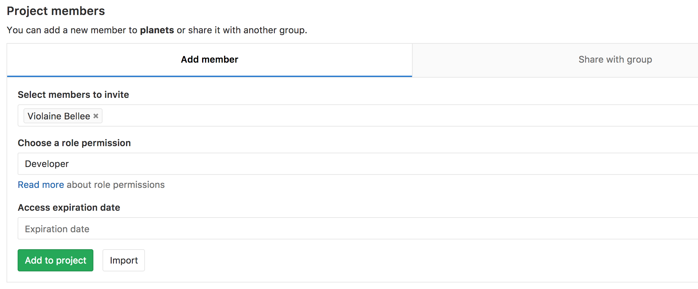

Sharing a repository with others
Learning Objectives
Clone a remote repository.
Collaborate pushing to a common repository.
For the next step, get into pairs. One person will be the “Owner” and the other will be the “Collaborator”. The goal is that the Collaborator add changes into the Owner’s repository. We will switch roles at the end, so both persons will play Owner and Collaborator.
Practicing By Yourself
If you’re working through this lesson on your own, you can carry on by opening a second terminal window. This window will represent your partner, working on another computer. You won’t need to give anyone access on GitLab, because both ‘partners’ are you.
The Owner needs to give the Collaborator access. On GitLab, click the “Members” tab at the top, and enter your partner’s username.

Understanding GitLab permissions
GitLab permission levels might be complicated to understand. This table might come in handy.
Next, the Collaborator needs to download a copy of the Owner’s repository to
her machine. This is called “cloning a repo”. To clone the Owner’s repo into
her Desktop folder, the Collaborator enters:
$ git clone ssh://git@gitlab.cern.ch:7999/vlad/planets.git ~/Desktop/vlad-planets
Replace vlad with the Owner’s username.

The Collaborator can now make a change in her clone of the Owner’s repository, exactly the same way as we’ve been doing before:
$ cd ~/Desktop/vlad-planets
$ nano pluto.txt
$ cat pluto.txt
It is so a planet!
$ git add pluto.txt
$ git commit -m "Add notes about Pluto"
1 file changed, 1 insertion(+)
create mode 100644 pluto.txt
Then push the change to the Owner’s repository on GitLab:
$ git push origin master
Counting objects: 4, done.
Delta compression using up to 4 threads.
Compressing objects: 100% (2/2), done.
Writing objects: 100% (3/3), 306 bytes, done.
Total 3 (delta 0), reused 0 (delta 0)
To ssh://gitlab.cern.ch:7999/vlad/planets.git
9272da5..29aba7c master -> master
Note that we didn’t have to create a remote called origin: Git uses this name
by default when we clone a repository. (This is why origin was a sensible
choice earlier when we were setting up remotes by hand.)
Take a look to the Owner’s repository on its GitLab website now (maybe you need to refresh your browser.) You should be able to see the new commit made by the Collaborator.
To download the Collaborator’s changes from GitLab, the Owner now enters:
$ git pull origin master
remote: Counting objects: 4, done.
remote: Compressing objects: 100% (2/2), done.
remote: Total 3 (delta 0), reused 3 (delta 0)
Unpacking objects: 100% (3/3), done.
From ssh://gitlab.cern.ch:7999/vlad/planets.git
* branch master -> FETCH_HEAD
Updating 9272da5..29aba7c
Fast-forward
pluto.txt | 1 +
1 file changed, 1 insertion(+)
create mode 100644 pluto.txt
Now the three repositories (Owner’s local, Collaborator’s local, and Owner’s on GitLab) are back in sync.
A Basic Collaborative Workflow
In practice, it is good to be sure that you have an updated version of the
repository you are collaborating on, so you should git pull before making
our changes. The basic collaborative workflow would be:
update your local repo with
git pull origin master,make your changes and stage them with
git add,commit your changes with
git commit -m, andupload the changes to GitLab with
git push origin master
It is better to make many commits with smaller changes rather than of one commit with massive changes: small commits are easier to read and review.
Switch Roles and Repeat
Switch roles and repeat the whole process.
Review Changes
The Owner push commits to the repository without giving any information to the Collaborator. How can the Collaborator find out what has changed with command line? And on GitLab?
Solution
On the command line, the Collaborator can use git fetch origin master
to get the remote changes into the local repository, but without merging
them. Then by running git diff master origin/master the Collaborator
will see the changes output in the terminal.
On GitLab, the Collaborator can go to their own fork of the repository and look right above the light blue latest commit bar for a gray bar saying “This branch is 1 commit behind Our-Respository:master.” On the far right of that gray bar is a Compare icon and link. On the Compare page the Collaborator should change the base fork to their own repository, then click the link in the paragraph above to “compare across forks”, and finally change the head fork to the main repository. This will show all the commits that are different.
Comment Changes in GitLab
The Collaborator has some questions about one line change made by the Owner and has some suggestions to propose.
With GitLab, it is possible to comment the diff of a commit. Over the line of code to comment, a blue comment icon appears to open a comment window.
The Collaborator posts its comments and suggestions using GitLab interface.
Version History, Backup, and Version Control
Some backup software can keep a history of the versions of your files. They also allows you to recover specific versions. How is this functionality different from version control? What are some of the benifits of using version control, Git and GitLab?
Key Points
git clonecopies a remote repository to create a local repository with a remote calledoriginautomatically set up.
{% right %} CC BY 4.0 - Based on git-novice © 2016–2017 Software Carpentry Foundation {% endright %}